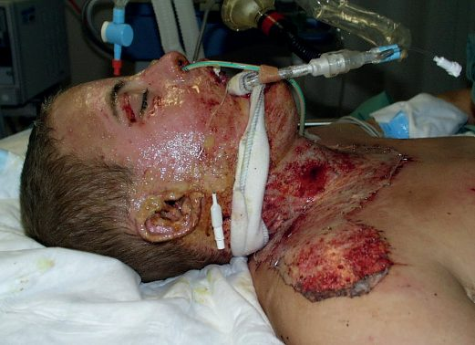
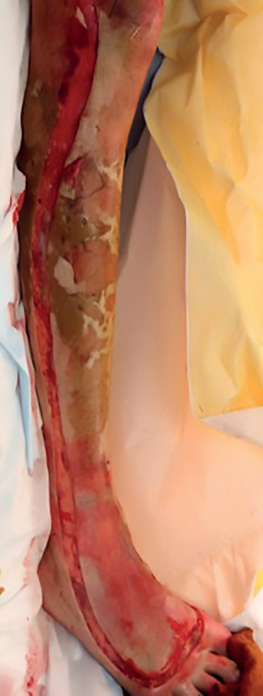
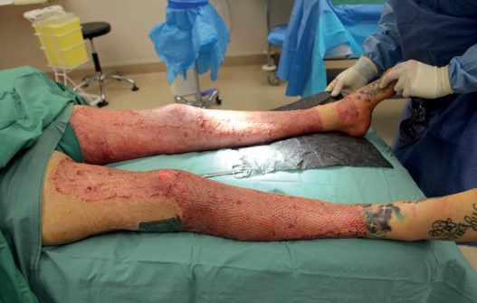
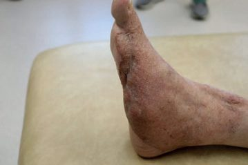

Burns
Summary
- Burns cause a multisystem injury, though the skin is by far the most commonly affected organ; major determinants of outcome are the percentage of total body surface area (TBSA) burned, presence of inhalation injury, burn depth, and patient age/comorbidities [1].
- Above 15% TBSA in adults (10% in children), the inflammatory fluid shift produces burn shock requiring formal fluid resuscitation [1].
- Scald burns are the most common mechanism overall, while flame burns are more likely to result in hospital admission [2].
- Burn deaths occur in a bimodal distribution, immediately after injury or weeks later from multiple organ failure, a pattern shared with all trauma deaths and captured in Basil Pruitt's maxim that "burns is the universal trauma model" [3].
- Recent probit analysis of US mortality puts the LD50 at a 55% TBSA burn; using the Baux score (age + %TBSA), the LD50 is 105 and the LD90 is 130 [3].
- There is no NICE clinical guideline on burn care.
- NICE's entire published output on burns consists of two device-level HealthTech guidances, HTG257 on laser Doppler imaging for burn depth assessment and HTG356 on the ReCell Spray-On Skin system, neither of which addresses assessment, resuscitation or referral [4][5].
- UK burn practice is instead governed by two specialty documents: the National Burn Care Referral Guidance, published in February 2012 by the National Network for Burn Care, an NHS body drawing on the four regional Burn Care Networks for England and Wales, NHS Specialised Commissioners, patient representatives and the British Burn Association [6]; and the BBA National Standards for the Provision of Adult and Paediatric Burn Care, 2nd edition [7].
Following the National Burn Care Review of 2001, English and Welsh specialised burn services are stratified into three levels, and the referral guidance exists specifically because the 2001 definitions "lacked specificity" [6]:
| Level | Description |
|---|---|
| Burn Centre | Highest injury complexity. A separately staffed, geographically discrete ward, skilled to the highest level of critical care, with immediate operating theatre access |
| Burn Unit | Moderate injury complexity. A separately staffed, discrete ward |
| Burn Facility | Non-complex burn injury. Equates to a standard plastic surgical ward |
Table reformats the three-tier UK service model [6]. Where a patient has major trauma plus a burn, treatment is agreed between the trauma service and the appropriate specialised burn service, and burn referral follows the initial treatment within the Major Trauma Centre [6].
Definition
Burns are classified by degree: first-degree (epidermis only, e.g. sunburn); second-degree, subdivided into superficial (papillary) dermis (painful, blisters, hair follicles intact, blanches, does not need grafting) and deep (reticular) dermis, decreased sensation, loss of hair follicles, needs grafting; third-degree (full thickness, leathery/charred, down to subcutaneous fat); and fourth-degree (down to bone, muscle, or adjacent adipose tissue) [2]. Bailey & Love's functional classification groups burns as "Group A" (superficial enough to heal spontaneously within 14 days with good functional/cosmetic outcome) versus "Group B" (deep enough to require prolonged secondary-intention healing or surgical closure) [1].
The depth nomenclature originates with Dupuytren's 1832 classification, which also described fifth-degree (through muscle to bone) and sixth-degree (charring bone) injuries, although these terms are now uncommon [8]. Sabiston sets out the same scheme in modern terms and pairs it with a six-way causal classification [3]:
| Cause | Mechanism |
|---|---|
| Flame | Superheated oxidised air, by convection and radiation |
| Scald | Contact with hot liquids |
| Contact | Contact with hot or cold solids |
| Electrical | Conduction of electrical current through tissues |
| Chemical | Contact with noxious chemicals |
| Friction | Shearing injury from moving belts, or contact with the ground at velocity |
- Table reformats Sabiston's causal classification [3].
- The first three cause cellular damage primarily by energy transfer producing coagulative necrosis, except cold injuries, which do not denature protein; electricity and chemicals damage cell membranes directly in addition to transferring heat; friction acts by direct shearing forces [3].
- Browse's adds that a heat burn is usually caused by direct flames, an explosion, contact with a hot object, steam or hot fluid, and that burns caused by steam or hot water are specifically called scalds [9].
Zones of injury
- The cutaneous injury is divided into three concentric zones, the Jackson levels [3].
- The necrotic centre, where cells were directly disrupted, is the zone of coagulation; this tissue is irreversibly damaged at the time of injury and will need excision and grafting [3][8].
- Immediately surrounding it is the zone of stasis, with vascular damage and vessel leakage, which depending on the wound microenvironment can either survive or progress to coagulative necrosis; appropriate resuscitation and wound care may prevent conversion to a deeper wound, whereas infection or suboptimal perfusion will deepen it [3][8].
- The outermost zone of hyperemia is characterised by vasodilation from inflammation, contains clearly viable tissue from which healing begins, and is generally not at risk of further necrosis [3].
- Sabiston notes that the Jackson model has been questioned by newer molecular and imaging techniques but remains the basis for describing burn wound progression [3].
Pathophysiology
- Burn injury triggers release of neuropeptides and complement activation from heat-altered proteins and pain fibre stimulation; activation of Hageman factor initiates protease cascades affecting arachidonic acid, thrombin, and kallikrein pathways, producing vastly increased vascular permeability with fluid, solute, and protein loss from the intravascular to extravascular space, proportional to burn area [1].
- Cell-mediated immunity is significantly reduced in large burns, increasing susceptibility to bacterial/fungal infection; granulocyte chemotaxis is also impaired [1][2].
- Gut mucosal ischaemia reduces motility and increases bacterial translocation, and can contribute to abdominal compartment syndrome [1].
- Circumferential full-thickness burns act as a tourniquet on limbs (ischaemia) or a mechanical restriction on the chest wall (impaired ventilation) as the burned, inelastic skin resists swelling [1].
- Carbon monoxide binds haemoglobin ~250 times more avidly than oxygen, forming inactive carboxyhaemoglobin, impairing oxygen delivery, and inhibiting cytochrome oxidase; it also falsely elevates pulse oximetry readings and shifts the oxygen-haemoglobin dissociation curve leftward [1][10].
- Cyanide from burning nitrogen-containing polymers disrupts electron transport at cytochrome A3, preventing oxygen utilisation [1][10].
The genomic storm
- The Glue Grant investigators demonstrated that over 80% of the genes in circulating immune cells are radically changed after severe injury including burns, a change so broad that they termed it a genomic storm [3].
- Genes of inflammation, innate immunity and anti-inflammation are dramatically upregulated while adaptive immunity genes are downregulated [3].
- Two findings from that work bear directly on management.
- First, later complications such as infection and organ failure were not related to tangible genomic changes during the course of recovery, differing only in the magnitude and duration of the initial changes, so tracking genomic and inflammatory mediator changes along the treatment course is unlikely to be fruitful for predicting complications, because these are already established at the time of injury [3].
- Second, the response did not differ by injury type, so the findings apply across trauma; severe burns induce massive physiological and immune changes that are prolonged for about a year after injury [3].
Oedema, the glycocalyx and cardiac output
- Locally produced mediators cause vasoconstriction, vasodilation, increased capillary permeability and oedema, after which a whole-body response ensues, with generalised oedema through Starling forces in both burned and unburned skin [3].
- Interstitial hydrostatic pressure in burned skin falls dramatically while it rises slightly in non-burned skin; as plasma oncotic pressure falls and interstitial oncotic pressure rises, oedema forms in both, but is greater in burned tissue because interstitial pressures there are lower [3].
- Mast cells release histamine in large quantities immediately after injury, increasing intercellular junction space formation in venules, though antihistamines have had limited success in treating burn oedema; aggregated platelets release serotonin, which increases pulmonary vascular resistance directly and aggravates the vasoconstrictive effect of other vasoactive amines [3].
- More recently, shedding of the endothelial glycocalyx, a glycoprotein-polysaccharide matrix that shields the endothelium from direct blood flow, prevents vascular permeability, inhibits coagulation and deters leukocyte adhesion, has been shown to be instrumental in the process, and resuscitation with plasma may ameliorate that disruption [3].
- Cardiac output falls immediately after injury from reduced blood volume, increased blood viscosity and decreased contractility, the latter attributed to a circulating myocardial depressant factor present in lymphatic fluid that has never been isolated; cardiac output is completely restored with resuscitation [3].
Hypermetabolism
- Typically 3 to 4 days after injury and resuscitation, hypermetabolism develops: tachycardia, increased cardiac output, elevated energy expenditure, increased oxygen consumption, and massive proteolysis and lipolysis [3].
- The response can reach 200% of the normal metabolic rate and continues unabated for 9 to 12 months after injury [3].
- It is driven by catabolic hormones: catecholamine stimulation of pancreatic beta-adrenergic receptors increases release of both glucagon and insulin, but concurrent alpha-receptor stimulation inhibits insulin more than glucagon, giving a net glucagon excess; glucocorticoids released through the hypothalamic-pituitary-adrenal axis add insulin resistance [3].
- Muscle glutamine stores are depleted to 50% of normal, and eighteen of the twenty amino acids are gluconeogenic [3].
- Peripheral lipolysis delivers free fatty acids to the liver, where the vast majority are re-esterified and deposited: fatty liver commonly develops, akin to non-alcoholic fatty liver disease, and adding fat to the diet only adds to the process [3].
- The classical ebb phase (low metabolic rate, hypothermia, low cardiac output) gives way after resuscitation to the flow phase of high cardiac output, oxygen consumption, heat production, hyperglycaemia and elevated metabolic rate, which Moore divided into catabolic and anabolic portions; the anabolic flow phase of slow protein and fat reaccumulation can extend for years [3].
Clinical features
- Warning signs of airway/inhalation injury include facial and neck burns, blistering inside the mouth, being trapped in an enclosed space, hoarseness/voice change, stridor, and singeing of facial/nasal hair [1].
- Superficial partial-thickness burns show blistering, pink moist dermis, brisk capillary refill on blanching, and normal pinprick sensation; deep partial-thickness burns show fixed capillary staining that does not blanch and reduced sensation (unable to distinguish sharp/blunt); full-thickness burns are hard and leathery, show no capillary return, and are completely anaesthetic [1].
- Inhalational injury symptoms (progressive respiratory effort, tachycardia, anxiety, confusion, falling saturations) may take 24 hours to 5 days to develop [1].
- Signs suggesting burn wound infection include peripheral oedema, conversion of a second- to third-degree burn, haemorrhage into the scar, erythema gangrenosum, green fat, black skin discoloration around the wound, and rapid eschar separation [2].
The bedside examination
Browse's frames the examination around five headings [9]. Pain is the main symptom, and is worst in superficial burns. Skin sensation must be carefully tested whenever a full-thickness burn is suspected, and retested 24 hours later, when absent sensation may be easier to determine. Airway: the face, mouth and airways must be assessed, because inhalation injury of their lining commonly complicates extensive burns; burns around the mouth, nose and lips are highly indicative, the buccal mucous membrane and tongue must be inspected for mucosal burns, and urgent anaesthetic review is essential if airway burns are suspected. Breathing: circumferential burns of the neck or chest may constrict breathing, and stridor or difficulty breathing is an indication for intubation and ventilation, especially in the unconscious patient. Circulation must be repeatedly assessed, because burns are associated with massive losses of fluid, electrolytes and protein from their surface, and red cell damage or destruction occurs particularly in full-thickness burns; pulse, blood pressure, central venous pressure, urine output and haematocrit must all be monitored in a major burn [9].
- Sabiston adds two practical cautions to the primary survey.
- Airway oedema from direct upper-airway injury combines with generalised whole-body oedema and may obstruct the airway over the course of hours, not minutes; progressive hoarseness is the sign of impending obstruction, and patients with massive burns may appear to breathe without problems early on and only develop significant airway oedema after several litres of resuscitation fluid, which is why those with over 40% TBSA burns should be intubated early [3].
- Blood pressure may be difficult to obtain in oedematous or charred extremities, and most burn patients remain tachycardic even when adequately resuscitated, so during the primary survey the presence of pulses or Doppler signals distally may be all that is available until arterial pressure and urine output monitoring are established [3].
- Schwartz's makes the corresponding point about intubation thresholds: perioral burns and singed nasal hairs alone do not indicate an upper airway injury, but do mean the oral cavity and pharynx should be evaluated further, whereas subjective dyspnoea is a particularly concerning symptom that should trigger prompt elective intubation [8].

Etiology
- Scalds tend to be superficial (deep in infants/elderly without good first aid); flame burns are mixed deep dermal/full thickness; alkali burns (including cement) are often deep dermal or full thickness via liquefaction necrosis; acid burns cause coagulation necrosis and are superficial at weak concentrations, deep at strong concentrations; electrical contact burns are typically full thickness and always deeper than they appear externally [1][2].
- Risk factors for burn injury include alcohol/drug use, extremes of age, smoking, low socioeconomic status, violence, and epilepsy [2].
- Non-accidental injury accounts for 15% of paediatric burns; suspicious features include delayed presentation, conflicting histories, sharply demarcated margins, uniform depth, absence of splash marks, stocking/glove patterns, flexor sparing, and dorsal hand involvement [2].
- Oxford lists the same red flags for non-accidental burn injury as delayed presentation, a history inconsistent or incompatible with the injury, other signs of trauma, and a suspicious pattern such as cigarette burns or bilateral "shoes and socks" scalds [11].
Epidemiology
- In the United States, approximately 43% of burns are caused by fire and flame, 34% by scalding with hot liquid or grease, 9% by contact, 3% by chemicals and 4% by electricity; three-quarters occur at home [3].
- Over the decade 2011–2020, 30% of burns occurred in the 0–19 age group and 41% in the 20–44 group, with 22% in those aged 45–64 and 7% over 64; 54% occurred in males [3]. Seventy-five percent of all burn-related deaths occur in house fires, commonly associated with food preparation or heating equipment, and the single cause of fire with the highest mortality remains cigarette smoking, which leads to 22% of house-fire deaths [3].
- Toddlers are scalded by hot liquids in 60% of their injuries, and a significant proportion of burns in children are the result of child abuse [3].
- Sabiston makes the point that these generalisations show most burn injuries to be preventable: legislation for fire-safe cigarettes, changes to the National Electrical Code, elevation of hot water heaters off the ground, and increased smoke alarm use have all significantly reduced fire death rates [3].
Radiation injury
The initial skin injury caused by radiation often resembles a standard thermal burn, with the associated lung and bowel damage and bone marrow depression appearing later; many patients exposed to high doses die from pulmonary complications or aplastic anaemia, and those who survive the early systemic effects may die later from radiation-induced malignancy in organs such as the thyroid [9].
Diagnosis
- Burn size is estimated using the Wallace rule of nines (each arm 9%, head 9%, each leg 18%, anterior and posterior torso 18% each, genitalia 1%) or the patient's palm (approximately 1% TBSA) for small burns; the Lund and Browder chart is the standard, more accurate tool for larger burns and adjusts for the proportionally larger head and smaller legs in children [1][2][11].
- Burn depth assessment uses history (temperature/duration of exposure), blanching, capillary refill, and sensation, following a stepwise protocol (Nikolsky sign, blister type, colour, sensation) [1].
- Inhalation injury is suspected from history and confirmed by fibreoptic bronchoscopy; chest radiograph may show patchy consolidation and soot may be visible in the nose/oropharynx [1][2].
- Burn wound infection is best diagnosed by quantitative wound biopsy, distinguishing infection at over 10^5 organisms per gram from colonization [2].
Estimating burn size accurately
- Three cautions attach to size estimation. Unblistered erythema must not be included in the area estimate [11], which is the same rule Schwartz's states as excluding superficial or first-degree burns from the calculation; thorough cleaning of soot and debris is mandatory to avoid confusing soiled skin with burn [8].
- Second, physicians inexperienced with burns tend to overestimate the size of small burns and underestimate the size of large burns, with potentially detrimental effects on pre-transfer resuscitation, a finding drawn from examination of referral data [8].
- Third, children need an age-adjusted chart: infants have 21% of TBSA in the head and neck and 13% in each leg, incrementally approaching adult proportions with growth, and the Berkow formula tabulates the exact figure for each body part at 0–1, 1–4, 5–9, 10–14, 15–18 years and adult [3].
- Browse's gives a different paediatric adjustment, head and neck scored as 18% and lower limbs downgraded from 18% to 14% [9], which is one reason the age-banded chart is preferred over an adjusted rule of nines.
Estimating burn depth
Oxford's four-step depth scheme is the concise bedside version: epidermal, erythema only; superficial partial thickness, pink, wet or blistered, blanches and refills, sensate; mid-deep dermal, blotchy red, wet or blistered, variable blanching, may be insensate; full thickness, white or charred, leathery, no blanching, insensate [11]. Expected healing times follow from the depth: superficial partial-thickness burns re-epithelialise from rete ridges and follicular dermis in 7 to 14 days, deep partial-thickness burns within the reticular dermis heal in 15 to 21 days from deep hair follicles and sweat gland keratinocytes but often with severe scarring, and full-thickness burns retain no epidermal or dermal keratinocytes and must heal from the wound edges [3].
- The clinically hard case is the indeterminate-depth burn, and Sabiston is explicit about how hard it is: clinical assessment of middle to deep partial-thickness burns, even by experts, has an accuracy of only 60% to 80%, and one recent study found 73% accuracy among multidisciplinary burn experts in predicting whether a wound would fail to heal and ultimately need grafting [3].
- Waiting for such wounds to "declare" costs painful dressing changes, increased hospital stay and delayed reintegration, and topical antibiotic use during that period often obfuscates the appearance by forming pseudoeschar, making the wound look deeper than it is [3].
- Adjunct technologies (laser Doppler imaging, laser speckle imaging, thermography, video-microscopy, optical coherence and spatial frequency domain imaging) all have significant limitations, and laser Doppler imaging is the most highly validated of them but is not the standard of care in the United States [3].
- On laser Doppler imaging, UK guidance runs the other way.
- NICE supports the case for adopting the moorLDI2-BI laser Doppler blood flow imager in the NHS when it is used to guide treatment decisions in patients where there is uncertainty about the depth and healing potential of burn wounds that have already been assessed by experienced clinicians [4].
- NICE states there is evidence of benefit for patients and for the NHS when the device is used in addition to clinical evaluation rather than instead of it, in burn wounds of intermediate (indeterminate) depth: by demonstrating which areas require surgical treatment and which do not, it enables earlier decisions about surgery and allows surgery to be avoided in some patients [4].
- The costed case assumes a 17% reduction in the number of skin graft operations at £2,319 each, giving an estimated average saving of £1,281 per patient scanned if the equipment is purchased, or £1,274 if leased [4].
- The guidance was migrated unchanged from Medical Technologies Guidance 2, and was last reviewed on 4 October 2021 with nothing new found that affected the recommendations [4].
Scoring and Severity
- Admission-to-burns-unit criteria include suspected airway/inhalational injury, any burn likely to need fluid resuscitation or surgery, burns of significance to hands/face/feet/perineum, extremes of age, non-accidental injury, and high-tension electrical or concentrated hydrofluoric acid burns [1].
- ABSITE Review criteria: second/third-degree burns over 10% BSA in patients under 10 or over 50 years, over 20% BSA in other adults, third-degree burns over 5% BSA at any age, burns to hands/face/feet/genitalia/perineum/major joints, electrical/chemical burns, and inhalational injury [2].
- The American Burn Association's own referral criteria to a verified burn centre are partial-thickness burns greater than 10% TBSA; burns of the face, hands, feet, genitalia, perineum or major joints; any full-thickness burn; electrical burns including lightning; chemical burns; inhalation injury; burns in patients whose pre-existing medical disorders could complicate management; burns with concomitant trauma where the burn poses the greater immediate risk; burned children in hospitals without qualified paediatric personnel or equipment; and burns in patients with poorly controlled pain [3].
- Oxford's referral list is similar but sets the size threshold at over 10% TBSA in an adult and over 5% TBSA in a child [11].
- Intravenous fluid resuscitation is indicated for adult burns over 15% TBSA and paediatric burns over 10% TBSA [1], or per ABSITE Review, the modified Parkland formula is used for burns of 20% BSA or more of at least second degree, capped at 50% BSA for calculation purposes [2].
- Oxford sets the same trigger as an added "F" step: fluid resuscitation for a child above 10% TBSA and an adult above 15% TBSA burnt [11].
- Adequate resuscitation is judged by urine output of 0.5–1.0 mL/kg/h in adults, over 1 mL/kg/h in children and over 2 mL/kg/h in infants under 6 months; output above 2 mL/kg/h should prompt a reduction in infusion rate [1][2][11].
- Abnormal carboxyhaemoglobin is above 10%, or above 20% in smokers [10]; Sabiston puts the toxicity threshold lower, at above 5%, with headaches above 10%, dizziness and impaired judgement at 20%, dyspnoea above 30%, and syncope, seizures and obtundation over 40% [3].
- Sabiston also notes that with burns of more than 20% TBSA, impairment of immune function is proportional to burn size [3].
- The UK referral thresholds are far lower than the textbook figures, and they are the single most examinable piece of UK burn guidance.
- The National Network for Burn Care sets the suggested minimum threshold for referral into a specialised burn service as all burns ≥2% TBSA in children or ≥3% in adults, all full-thickness burns, all circumferential burns, and any burn not healed in 2 weeks [6].
- Any burn with suspicion of non-accidental injury must be referred to a Burn Unit or Centre for expert assessment within 24 hours [6].
- That is roughly a threefold lower size threshold than the ABA and Oxford Handbook figures of 10% in adults and 5% in children, and the two-week non-healing criterion has no textbook equivalent at all.
A separate list of factors should prompt a discussion with a consultant in a specialised burn service, with consideration given to referral: all burns to hands, feet, face, perineum or genitalia; any chemical, electrical or friction burn; any cold injury; any unwell or febrile child with a burn; and any concerns regarding burn injuries and co-morbidities that may affect treatment or healing [6]. If those criteria are not met, local care and dressings continue, but if the wound changes in appearance, shows signs of infection, or raises concerns about healing, it should be discussed with a specialised burn service, and any suspicion of toxic shock syndrome should prompt early referral [6].
The guidance then assigns each threshold to a service level using five criteria (TBSA, depth, site, mechanism and other factors) with each threshold labelled either Refer or Discuss [6]:
| Criterion | Burn Facility | Burn Unit | Burn Centre |
|---|---|---|---|
| Adult TBSA (Refer) | ≥3% and <10%, including those with inhalation injury | ≥10% and <40%; ≥10% and <25% with inhalation injury | ≥40%; ≥25% with inhalation injury |
| Child TBSA (Refer) | ≥2% and <5% | ≥5% and <30%; ≥5% and <15% if under 1 year | ≥30%; ≥15% if under 1 year |
| Adult depth (Refer) | Any full-thickness burn | ≥5% and <40% if non-blanching | Not stated |
| Child depth (Refer) | All full-thickness burns; ≥2% full thickness if under 10 years; ≥1% full thickness if under 6 months | Not stated | ≥20% TBSA if full thickness |
| Site (Refer) | Not stated | Any significant burn to hands, feet, face, perineum or genitalia; any non-blanching circumferential burn in adults, any circumferential burn in children | Not stated |
| Mechanism (Discuss) | Any chemical, electrical or friction burn; any cold injury | Not stated | Not stated |
| Other (Refer) | Any burn not healed in 2 weeks | Any predicted or actual need for HDU or ITU level care | Assisted ventilation specifically for the burn for more than 24 hours (paediatric) |
- Table reformats the NNBC referral thresholds [6].
- Three definitions govern how the table is used. Inhalation injury is defined as, at minimum, visual evidence of suspected upper airway smoke inhalation, laryngoscopic or bronchoscopic evidence of tracheal or more distal contamination or injury, or unconsciousness at the scene with suspicion of inhalation or a raised carboxyhaemoglobin; if there are any concerns about inhalation injury with a burn of any size, it should be discussed with a Burn Care Centre [6]. All burns that are not blanching should be referred to a specialised burn service, whatever the tabulated size [6].
- And "significant" is defined by the referrer, meaning any injury where they feel greater MDT expertise is required [6].
- Two further UK-specific provisions have no counterpart in the textbooks.
- Special consideration should be given to referring patients over 65 with ≥25% TBSA to a Burn Care Centre, especially where there are co-morbidities [6].
- And in adults, the implementation of end-of-life care as a result of burn injury should only be made following assessment by at least two consultants, one of whom should be a specialised burn care surgeon; patients assessed as requiring end-of-life care should be discussed with a consultant burn specialist at a Burn Centre, to weigh local palliative care against transfer [6].
- Where a "Refer" threshold is not followed because of extenuating circumstances, that must be agreed at consultant level with the next service level up, recorded in the patient's notes, and subjected to formal audit [6].
Treatment and Management
- Prehospital: ensure rescuer safety, stop the burning process, cool the wound with tepid (~15°C) water for at least 20 minutes (effective up to 1 hour post-injury, while avoiding hypothermia), give oxygen, elevate burned limbs or sit the patient up for airway burns, and provide analgesia [1].
- Sabiston sets the same window slightly differently: room-temperature water should be copiously poured on the wound for up to 30 minutes within 3 hours of injury to decrease wound depth and improve healing and scarring, and any subsequent cooling avoided to preclude hypothermia [3].
- All rings, watches, jewellery and belts should be removed because they retain heat and produce a tourniquet-like effect [3].
- Prehospital wound care is deliberately basic: a clean dry dressing or sheet, never a damp one, followed by a blanket to minimise heat loss; covering the wound is also the first step in pain control because it prevents contact with exposed nerve endings [3]. Intramuscular or subcutaneous opioid injections should never be used, because peripheral vasoconstriction reduces absorption and produces later, unexpected release with respiratory complications; small intravenous doses may be given after complete assessment by an experienced practitioner [3].
- Hospital management follows ATLS with an added "F" for fluid resuscitation: Airway, Breathing, Circulation, Disability, Exposure, Fluid resuscitation [1][11]. Airway: early elective intubation is safest for suspected airway burn because delay allows swelling to make intubation difficult or impossible, with a window of occlusion typically 4–24 hours; cricothyroidotomy equipment must be available [1].
- Indications for intubation include upper airway stridor or obstruction, worsening hypoxaemia, or anticipated massive volume resuscitation [2]. Fluid resuscitation: the modified Parkland formula, 4 mL × %TBSA burn × weight in kg, with half given over the first 8 hours and the remainder over the next 16 hours, using lactated Ringer's or Hartmann's solution; colloid (albumin) in the first 24 hours increases pulmonary complications and should be reserved for after 24 hours; children also require maintenance fluid [1][2].
- Oxford gives the figure as 3–4 mL of Hartmann's solution per kg per %TBSA burnt, half over the first 8 hours and half over the next 16, with maintenance fluid in addition for children [11].
- The Parkland formula can significantly underestimate requirements with inhalational injury, alcohol intoxication, electrical injury, or after escharotomy [2].
- Hypothermia, part of the lethal triad, is prevented with warmed fluids, external warming devices, and increased ambient temperature [1].
Fluid creep and the trend to less
- Sabiston sets out the historical arc behind the formulas and the reason practice is now moving away from 4 mL/kg/%TBSA.
- Baxter showed that burn oedema fluid is isotonic and contains the same protein concentration as plasma, and that colloid should not be used in the first 24 hours until capillary permeability returns closer to normal, findings that became the Parkland formula; Pruitt's parallel work produced the Brooke formula at 2 mL/kg/%TBSA [3].
- Approximately 50% of the fluid given is sequestered in non-burned tissues in a 50% TBSA burn [3].
- The term fluid creep was coined by Pruitt in 2000, and literature from that decade showed patients receiving almost twice the volume predicted by the Parkland formula, with abdominal compartment syndrome a common consequence [3].
- One of the chapter's authors reports reducing volumes from 4.1 to 3.3 mL/kg/%TBSA using an adjusted ideal body weight index with plasma rescue, with significant improvements in mortality, ventilator-free days, acute kidney injury, tracheostomy and dialysis, and a later version starting almost all patients at 2 mL/kg/%TBSA reduced median administration to 1.7 mL/kg/%TBSA with a median of 30 ventilator-free days and no increase in mortality or significant acute kidney injury [3].
- Schwartz's records the same shift: the most recent American Burn Association consensus formula recommends 2 mL/kg per % burn of lactated Ringer's, given the tendency toward excessive fluid administration with the traditional formulas [8].
- Two practical corollaries follow.
- The formula gives a starting rate to be titrated hourly, not a prescription: dividing the 24-hour total by 16 gives the starting hourly rate directly, since about half the total is given in the first 8 hours; an alternative is the "Rule of Tens", multiplying %TBSA by 10 for the initial hourly rate [3].
- And if a patient has already received a large prehospital or emergency department bolus, that fluid has likely leaked into the interstitium and the patient still requires ongoing burn resuscitation according to the estimates [8].
- Venous access is best obtained through short peripheral catheters in unburned skin, but veins in burned skin are preferable to no access; saphenous vein cut-down is preferred to central cannulation because of lower complication rates, and intraosseous access in the proximal tibia may be used in children under 6 [3].
- Lactated Ringer's without dextrose is the fluid of choice except in children under 2, who should receive 5% dextrose with lactated Ringer's [3].
- Hypertonic saline has theoretical advantages but a randomised comparison in burns over 20% TBSA found no difference in volume infused or percentage weight gain, and other investigators found increased renal failure, so Sabiston does not recommend its widespread use [3].
- A nasogastric tube should be inserted in all major burns, particularly before air transport at altitude [3].
Carbon monoxide poisoning is treated with high-flow, high-concentration (100%) oxygen, rarely hyperbaric oxygen [1][10]; 100% oxygen reduces the half-life of carboxyhaemoglobin from 4 hours on room air to 1 hour [3]. Cyanide poisoning is treated with intravenous hydroxocobalamin (vitamin B12), or amyl/sodium nitrite [1][10]. Schwartz's notes that hydroxocobalamin is the agent for immediate therapy because it complexes cyanide rapidly and is renally excreted, whereas sodium thiosulfate works slowly and is not effective acutely, and that in the majority of patients lactic acidosis resolves with ventilation, making thiosulfate unnecessary; the classical signs of bitter almond breath and cherry-red skin are rare and should not be the sole diagnostic criteria [8]. Tetanus prophylaxis is required for burn wounds [2]; Sabiston specifies 0.5 mL tetanus toxoid for all burns greater than 10% TBSA, with 250 units of tetanus immunoglobulin added if prior immunisation is absent, unclear, or the last booster was more than 10 years ago [3].
Inhalation injury
- Damage in inhalation injury is primarily chemical, from inhaled toxins: heat is dispersed in the upper airways and direct thermal damage to the lung is rarely seen, the exception being high-pressure steam, which has 4,000 times the heat-carrying capacity of dry air [3].
- The airway response is an immediate increase in bronchial artery blood flow with oedema formation, neutrophil influx and separation of ciliated epithelial cells from the basement membrane, followed by exudate that coalesces into fibrin casts; these are difficult to clear with standard suction and act as ball valves, opening in inspiration and closing in expiration, adding distal barotrauma, pneumothorax and reduced compliance [3].
- The clinical course runs in three stages: acute pulmonary insufficiency from asphyxia, CO poisoning, bronchospasm and upper airway obstruction; then, at 72 to 96 hours, increased extravascular lung water, hypoxia and diffuse lobar infiltrates resembling ARDS; then clinical bronchopneumonia, which appears in up to 60% of these patients, generally 3 to 10 days after injury, with early pneumonias usually penicillin-resistant staphylococci and later ones gram-negative, especially Pseudomonas and Klebsiella [3].
- Management aims to keep airways open and maximise gas exchange while the lung heals, and Sabiston's central point is that a coughing patient with a patent airway clears secretions more effectively than any suctioning technique, including bronchoscopy, so patients should be managed without mechanical ventilation where possible and extubated as early as possible [3].
- Ventilation should use permissive hypercapnia and ARDS protocols, tolerating arterial oxygen tensions above 60 mmHg or saturations of 92% to limit oxygen toxicity [3].
- Specific inhaled treatments are nebulised heparin 5,000–10,000 units in 3 mL normal saline four-hourly, nebulised 20% acetylcysteine 3 mL four-hourly, and two-hourly bronchodilators; adding acetylcysteine to nebulised heparin in burned children with inhalation injury decreases reintubation and mortality rates [3]. Steroids are not of benefit and should not be given unless the patient was steroid-dependent before injury or has bronchospasm resistant to standard therapy, and prophylactic antibiotics for inhalation injury are not indicated [3].
- Pulmonary oedema is not prevented by fluid restriction; inadequate hydration in fact worsens pulmonary injury by sequestering neutrophils and increases the risk of death [3].
Wound dressings and topical antimicrobials
- Wound dressings for Group A (superficial) burns include silver sulfadiazine, hydrocolloids such as Duoderm, biosynthetic dressings such as Biobrane, and silver nanocrystal dressings such as Acticoat [1].
- Oxford's practical scheme is to wash burns with normal saline or chlorhexidine, debride large blisters, elevate limbs to reduce pain and swelling, dress hands in plastic bags to allow mobilisation, and treat small burns as an outpatient with simple non-adherent dressings and twice-weekly wound inspection [11].
- It adds an important caveat about topical silver sulfadiazine: it is used on deep burns to reduce infection risk but should not be applied until the patient has been reviewed by a burns unit, because it makes depth difficult to assess [11].
- Sabiston divides topical antimicrobials into salves, soaks and antimicrobial dressings, each with a different trade-off: salves may be applied daily but lose effectiveness between changes, and frequent changes cause shearing and procedural pain; soaks stay effective because solution can be added without removing the dressing, but the underlying skin macerates; long-acting antimicrobial dressings can stay in place 3 to 7 days, reducing pain and provider effort, but typically prevent direct observation of the wound [3].
- The untreated burn wound rapidly becomes colonised, and once organisms proliferate beyond 10^5 organisms per gram of tissue some penetrate viable tissue and invade blood vessels [3].
- Synthetic and biologic dressings (allograft, xenograft, Biobrane, Suprathel, dermal equivalents) should generally be applied within 72 hours of injury, before high bacterial colonisation occurs, and unlike topical antimicrobials they do not inhibit epithelialisation [3].
- Oxford lists the same family with their compositions: split skin allograft from live or cadaveric donors, human amnion, porcine xenograft, Biobrane (silicone film with nylon fabric bound to porcine dermal collagen), TransCyte, Integra (bovine tendon collagen, shark glycosaminoglycan and silicone), MatriDerm (bovine dermal collagen and nuchal ligament elastin) and cultured epithelial autograft, noting that the regenerated skin from cultured autograft lacks dermis and its quality is variable if used alone [11].
Nutrition
- Caloric need is estimated as 25 kcal/kg/day plus 30 kcal per %burn, and protein need as 1 g/kg/day plus 3 g per %burn; glucose is the preferred non-protein calorie source, and enteral feeding tubes are placed for significant BSA burns [2].
- Schwartz's gives the Curreri formula as 25 kcal/kg/day plus 40 kcal per %TBSA per day, and notes the Harris-Benedict equation with an activity factor of 2 may be inaccurate in burns under 40% TBSA; titrating caloric needs closely matters because overfeeding leads to fat storage rather than muscle anabolism, and a metabolic cart has not been shown to be more beneficial than the predictive equations in burn patients [8].
- Sabiston reports that measured total energy expenditure by the doubly labelled water method was only 1.3 times predicted basal energy expenditure in children with burns over 40% TBSA, and 1.1 times during convalescence, indicating that the traditional doubling of predicted basal energy expenditure is probably too high [3].
- Optimal composition is 1 to 2 g/kg/day of protein, giving a calorie-to-nitrogen ratio around 100:1, with non-protein calories preferentially from carbohydrate: almost all fat transported in very-low-density lipoprotein after severe burn derives from peripheral lipolysis rather than de novo hepatic synthesis from dietary carbohydrate, so reliance on fat for non-carbohydrate calories has little support [3]. Total parenteral nutrition delivered centrally has been associated with increased complications and mortality compared with enteral feeding and is reserved for patients who cannot tolerate enteral feeds [3].
- Of the anabolic adjuncts studied (growth hormone, insulin-like growth factor, insulin, oxandrolone, testosterone and propranolol) oxandrolone and propranolol were the most commonly used, but oxandrolone has since been removed from the market by the FDA [3].
Electrical, chemical and friction burns
- Electrical burns require cardiac monitoring, as internal injury is always worse than skin findings suggest, with risk of rhabdomyolysis, compartment syndrome, and delayed neurological complications [2].
- Oxford divides them by voltage: low voltage below 1,000 V, the domestic supply, causes local contact wounds without deep injury but may cause cardiac arrest; high voltage above 1,000 V from high-tension cables, power stations or lightning causes cutaneous and deep tissue damage with entry and exit wounds, and muscle damage may require fasciotomy [11].
- Myoglobinuria can cause renal failure, so urine output above 75–100 mL/h is targeted with consideration of alkalinisation and osmotic diuresis; an ECG is taken on admission for all electrical injuries, with continuous cardiac monitoring for 24 hours in significant and high-voltage injuries [11].
- Sabiston explains why the visible wound understates the injury: current enters and travels through the tissues of lowest resistance (nerves, muscles and blood vessels) while the skin, of high resistance, is mostly spared, and because most muscle lies close to bone, that is where the damage is greatest; vessels transmitting the current stay patent initially but may thrombose progressively, causing further tissue loss days later [3].
- Central nervous system effects such as cortical encephalopathy, hemiplegia, aphasia and brainstem dysfunction have been reported up to 9 months after injury [3].
- Schwartz's adds that a normal ECG in a low-voltage injury may preclude hospital admission, and that fasciotomies should be performed even on moderate clinical suspicion in high-voltage injury [8].
- Browse's records that in high-voltage burns such as lightning strikes survival is uncommon, because the depolarisation usually causes severe cardiac arrhythmia and arrest [9].
- Acid and alkali burns require copious water irrigation, alkalis causing deeper injury via liquefaction necrosis than acids, which cause coagulation necrosis; hydrofluoric acid burns are treated with topical and local calcium; powder burns are wiped away before irrigation; tar burns are cooled then removed with a lipophilic solvent [2].
- Sabiston gives the reasoning behind the volumes: 10 mL of 98% sulfuric acid dissolved in 12 litres of water still gives a pH of 5.0, which can injure, so a reasonable rule of thumb is 15 to 20 litres of tap water or more for a significant chemical injury, with the lavage site kept drained and directed away from uninjured skin [3].
- Attempts to neutralise alkali with weak acids are not recommended, because heat released by the neutralisation reaction compounds the injury [3].
- Cement (calcium oxide) burns are irrigated with water and soap until the effluent has a pH below 8 [3].
- Hydrofluoric acid, the strongest known inorganic acid, chelates calcium and magnesium into insoluble salts and can cause life-threatening arrhythmia; treatment is copious irrigation then 2.5% calcium gluconate gel changed at 15-minute intervals until pain subsides, escalating to intradermal 10% calcium gluconate at 0.5 mL per cm² affected or intra-arterial calcium if pain relief is incomplete, with all patients admitted for cardiac monitoring, particular attention to QT prolongation, and 20 mL of 10% calcium gluconate added to the first litre of resuscitation fluid [3].
- Oxford notes that a hydrofluoric acid burn of only 2% TBSA can be fatal, and that fingernails should be trimmed or removed [11].
- Oxford also covers the agents that must not be irrigated first: elemental sodium, potassium, magnesium and lithium ignite in water and should be brushed off with consideration of oil lavage; phosphorus is irrigated then debrided, with copper sulfate applied to turn residual particles black so they can be identified; bitumen is cooled with water and removed with peanut or paraffin oil; tar is cooled with water and left to emulsify with topical ointments [11].
- Formic acid injuries produce a characteristic greenish wound that is deeper than it appears, with metabolic acidosis, renal failure, intravascular haemolysis and pulmonary complications; haemodialysis may be needed with extensive absorption [3].
Friction burn presents in two forms, contact with a high-speed motorised belt and "road rash" from the ground, and the latter combines thermal injury from friction heat with mechanical abrasion, laceration, avulsion and degloving, plus deeper vascular shear producing haematoma and skin, fat or muscle necrosis; these wounds carry significant environmental contamination, a higher infection risk, and the risk of tattooing the dermis with contaminating material, so many patients benefit from aggressive lavage under heavy sedation or general anaesthesia [3]. There is no role for prophylactic systemic antibiotics in burns [2], although Sabiston notes that perioperative systemic antibiotics likely benefit patients with injuries greater than 30% TBSA [3].
The British Burn Association's Pre-Hospital Special Interest Group publishes First Aid Clinical Practice Guidelines, based on a systematic literature review and stated as a minimum standard of care practical in any setting [12]. Its thermal-burn sequence is STOP, REMOVE, COOL, WARM, COVER [12].
- Stop the burning process, remove the person from the source once safe; extinguish burning clothing with water or "Stop, Drop and Roll"; isolate electrical power sources before attempting rescue; avoid chemical cross-contamination.
- Remove clothing and jewellery, burned, contaminated, damp or constricting clothing, nappies, jewellery and contact lenses near the burned area, but leave any molten or adherent clothing.
- Cool the burn, cool immediately with cool running tap water for 20 minutes and within 3 hours of injury. Aim to complete 20 minutes; further cooling attempts may induce hypothermia, especially in children, the elderly, and where large burns are present. If water is limited, apply a cool water compress with clean wetted lint-free cloth, changed frequently over the 20-minute period. If no water is available in any form, cover with cling film and cool at the first opportunity within 3 hours. Evidence for hydrogels is limited. Do not use ice or iced water.
- Warm the patient, "cool the burn but warm the patient"; cover non-burned areas during cooling and continue warming throughout care.
- Cover the burn, loose longitudinal strips of cling film, or any clean lint-free cloth or non-adherent dressing. Do not wrap cling film circumferentially around limbs or other burned areas, and do not apply cling film to facial burns. Cover irrigated and fully decontaminated chemical injuries with a wet compress.
- For chemical burns, the duration of the chemical's contact with the skin is a major determinant of severity, so irrigation must not be delayed for detailed assessment or to obtain a particular fluid, regardless of any delay in presentation: irrigate skin or eyes with a sterile isotonic solution such as Hartmann's or normal saline, an amphoteric solution, or room-temperature running water for at least 20 minutes, continuing until pain or burning decreases or the patient has been assessed by a burn specialist [12].
- Dry powders are brushed off and solid fragments removed before wet decontamination, and personal protective equipment is worn to minimise cross-contamination.
- Two prohibitions are explicit: do not irrigate dry lime, phenols, muriatic acid, concentrated sulphuric acid or elemental metals with water, and do not attempt to neutralise the chemical, because the potential exothermic reaction could contribute to further tissue destruction [12].
- The National Poisons Information Service and TOXBASE are named as the source of agent-specific decontamination and treatment information [12].
- For electrical burns, the injury site is cooled with cool running tap water for 20 minutes within 3 hours once the electrical source has been controlled, and, on a point that diverges from the textbook advice for routine 24-hour monitoring, if there is no history of unconsciousness, cardiac arrest, or abnormal rate or rhythm on a normal ECG, prolonged monitoring is not required [12].
- For tar and bitumen, the molten agent and injury site are cooled with cool running tap water for 20 minutes within 3 hours or until completely cooled, after which solvents containing liquid paraffin or any oily substance emulsify the tar; tar removal is not an emergency and may be delayed until arrival at the burn service [12].
- For cold burns (frostbite), life-threatening conditions such as hypothermia or severe trauma take priority over regional cold injury; local rewarming begins pre-hospital only if refreezing will not occur in transit; rewarming is rapid and continual in circulating water at 37 °C to 39 °C with a mild antibacterial agent such as povidone-iodine or chlorhexidine for at least 30 minutes within 12 hours of injury, and is complete when all injured tissues have regained sensation and feel soft and pliable with a red-purple appearance; dry heat must not be used, and pressure, massage or rubbing must be avoided [12].
Surgeries
Escharotomy is required for circumferential full-thickness burns to limbs, where they act as a tourniquet, or to the torso, where they mechanically restrict ventilation, performed within 4–6 hours of injury; limb incisions run in the midaxial line avoiding major nerves and vessels, anterior or medial to the elbow to avoid the ulnar nerve, posterior and medial to the ankle to avoid the long saphenous vein, and anterior to the fibular head to avoid the common peroneal nerve, while chest escharotomy uses two longitudinal incisions lateral to the nipples joined by horizontal incisions below the clavicles and at the xiphisternum [1][2]. Fasciotomy may be additionally required if compartment syndrome is suspected after escharotomy [2].
- The textbooks disagree on timing, and the disagreement is worth stating.
- Bailey & Love places escharotomy within 4–6 hours of injury [1], whereas Schwartz's states that escharotomies are rarely needed within the first 8 hours following injury and should not be performed unless indicated, because of the terrible aesthetic sequelae [8].
- What resolves the difference is the indication rather than the clock: Sabiston identifies extremities at risk either on clinical examination, by numbness and tingling, increased pain in the digits, or loss of Doppler signals in the digital arteries and palmar or plantar arches, or on measurement of tissue pressures greater than 30 mmHg [3].
- Oxford's version of the same rule is that loss of pulses or sensation is a late sign, and that in the early stages pain at rest or on passive movement of distal joints indicates ischaemia [11].
- Both Sabiston and Schwartz's advise against routine digital escharotomy: distensible tissue in the fingers is minimal, digital escharotomies do not usually salvage meaningful functional tissue, and they are not indicated during resuscitation in the absence of clear signs of ischaemia [3][8].
- The commonest complications of escharotomy are blood loss and release of anaerobic metabolites causing transient hypotension; if distal perfusion does not improve, central hypotension from hypovolaemia should be suspected and treated rather than more incisions made [3].
- Schwartz's specifies the thoracic incisions as along the anterior axillary lines with bilateral subcostal and subclavicular extensions, with extension down the lateral abdomen typically releasing abdominal eschar adequately [8].
- Burn excision: early total excision as soon as the patient is stabilised exploits the "anaesthetic", "haemodynamic" and "bacterial" windows to reduce pulmonary decompensation, blood loss and infection risk; a staged approach with serial debridement is used where resources are limited [1].
- Wounds should generally be excised within 72 hours after adequate fluid resuscitation; viability during excision is judged primarily by punctate bleeding, then colour and texture, using a dermatome [2].
- Each excision session should aim for under 1 L blood loss, under 20% of skin excised, and under 2 hours operative time [2].
- Face, palms, soles and genital burns are typically deferred for the first week [2].
- Oxford's threshold is deep dermal or full-thickness burns too large to heal rapidly by secondary intention, usually operated within 72 hours, with excision to healthy tissue either tangential using a skin graft knife or scalpel, or full thickness using monopolar diathermy, depending on burn thickness [11].
- Sabiston's maxim is that "there is no advantage to unexcised eschar", a corollary of the golden rule of wound surgery, "close the wound promptly", and its recommendation is complete early excision of clearly full-thickness wounds within 48 hours of injury [3].
- It reports the practical reason for operating early: blood loss diminishes if the operation is done early, probably because of the relative predominance of vasoconstrictive substances such as thromboxane and catecholamines and the natural oedema planes present immediately after injury, whereas after 4 to 7 days the wound becomes hyperaemic and blood loss becomes a considerable problem [3].
- Schwartz's lists the haemostatic adjuncts that made tangential excision practicable: epinephrine tumescence solution instilled beneath the burn, pneumatic tourniquets for extremity burns, dilute epinephrine-soaked compresses, and a fibrinogen-and-thrombin spray sealant, which together have markedly reduced blood transfusion during burn surgery; fascial excision with electrocautery markedly decreases blood loss but is cosmetically inferior because of the loss of subcutaneous tissue [8].
- Grafting: autografts, split-thickness or full-thickness, are preferred over allografts and homografts, which last about 4 weeks before rejection, over xenografts, porcine and lasting about 2 weeks without vascularising, and over dermal substitutes; graft take proceeds via imbibition on days 0–3 then neovascularisation from day 3 [2].
- Skin grafting is contraindicated over poorly vascularised beds such as tendon, bone without periosteum or irradiated tissue, or when wound culture shows beta-haemolytic streptococcus or more than 10^5 organisms [2].
- Split-thickness grafts survive more reliably because they are thinner and imbibe more easily; full-thickness grafts cause less contraction and are preferred for palms and dorsal hands, immobilised in extension for 7 days after grafting [2].
- Meshed grafts are used on the back, flank, trunk and limbs, and genital burns can use meshed split-thickness graft [2].
- Infected burn wounds are treated by excision with allograft rather than autograft placement, plus systemic antibiotics [2].
- Sabiston sets out the size arithmetic: wounds covering 20% to 30% TBSA can usually be closed at one operation with autograft, unmeshed or meshed at 2:1 or less to maximise cosmesis, whereas in major burns the standard approach is widely expanded autograft at 4:1 or greater covered with cadaver allograft, the 4:1 skin healing underneath in approximately 21 days as the allograft separates; areas of less cosmetic importance take the widely meshed skin, reserving unmeshed grafts for the hands, forearms and face at later operations [3].
- Graft loss is attributed, in order of frequency, to inadequate excision of the wound bed leaving necrotic tissue, shearing forces disrupting an adhered graft, infection causing graft lysis, and fluid collection under the graft [3].
- Cultured epithelial autografts expand a single small full-thickness biopsy to cover most of the body and are of use in truly massive burns above 80% TBSA, but take 2 to 3 weeks to grow, have a 50% to 75% take rate, resist mechanical trauma poorly, may increase scarring because they lack dermis, carry a potential for squamous cell cancer, and are expensive; in one comparison, patients over 80% TBSA who received them had longer acute hospital stays and more subsequent reconstructive operations than those given conventional treatment [3].
- Schwartz's notes that xenografts are not a permanent alternative to split-thickness grafts when donor sites are insufficient [8].
- On autologous skin cell suspension, NICE and the textbooks part company.
- NICE's assessment of the technology in the NHS is that the ReCell Spray-On Skin system shows potential to improve healing in acute burns, but there is insufficient evidence on its use in clinical practice, particularly on which patients might benefit most, to support the case for its routine adoption in the NHS [5].
- NICE recommends research addressing the claimed patient and system benefits, with clinical outcomes to include time to 95% healing, length of hospital stay, cosmetic appearance of the scar and function of the burned area, compared with standard care [5].
- The guidance also records that since October 2018 ReCell has not been actively marketed to new NHS users, and sale in the UK remains limited to existing users [5], so the practical availability question in the NHS is settled independently of the evidence question.
- The guidance was migrated unchanged from Medical Technologies Guidance 21 and last reviewed on 7 August 2020 [5].
- The BBA standards place two surgical requirements on the referral pathway rather than on the operation itself.
- Every burn service at Centre, Unit and Facility level must have ratified referral guidelines covering, among other items, airway and inhalation injury management with anaesthetic assessment prior to transfer and the need for surgery (escharotomy) prior to transfer [7].
- The same two items are required of the Burn Care Network as a whole [7].
- Escharotomy before transfer is therefore treated in the UK as a decision to be made jointly with the receiving burn service under a written protocol, not as a discretionary local call.


Complications
- Carbon monoxide poisoning is the most common immediate cause of fire-related death [1].
- Pneumonia is the most common infection and the most common cause of death in patients with burns over 30% BSA, with inhalational injury the leading risk factor [2].
- Burn wound infection risk rises with burn size and is more common above 30% BSA; Pseudomonas is the classically cited most common organism, followed by Staphylococcus, E. coli and Enterobacter, and HSV is the most common viral infection of burn wounds [2].
- Silver sulfadiazine can cause neutropenia and thrombocytopenia and has limited eschar penetration; silver nitrate causes electrolyte imbalance with hyponatraemia, hypochloraemia, hypocalcaemia and hypokalaemia, plus methaemoglobinaemia, and is contraindicated in G6PD deficiency; mafenide acetate has the broadest antipseudomonal and Gram-negative coverage and the best eschar penetration but causes metabolic acidosis via carbonic anhydrase inhibition [2].
- Schwartz's qualifies both of those attributions: the reputation of silver sulfadiazine for causing neutropenia is more likely explained by neutrophil margination from the post-burn inflammatory response, and multiple studies using mafenide on burn wounds have found no significant incidence of metabolic acidosis [8].
- Silver sulfadiazine destroys skin grafts and is contraindicated on burns or donor sites near newly grafted areas, and may retard epithelial migration in healing partial-thickness wounds [8].
- Sabiston adds that silver nitrate solution stains contacted surfaces dull grey or black, which is problematic when deciphering wound depth during excision, and that Dakin's solution is inactivated by contact with protein so must be continually changed [3].
- The most common reason for skin graft loss is seroma or haematoma formation beneath the graft, preventing attachment, mitigated with a pressure or bolster dressing [2].
- Extremely deep burns, electrical burns or compartment syndrome can cause rhabdomyolysis with myoglobinuria, treated with hydration and urine alkalinisation [2].
- Electrical burns carry risk of polyneuritis, quadriplegia, transverse myelitis, cataracts, liver necrosis, intestinal or gallbladder perforation, pancreatic necrosis, and posterior shoulder dislocation or vertebral fracture from tetanic contraction [2].
- Sabiston puts the incidence of cataracts and the other late neurological complications of significant high-voltage injury at up to 30%, and notes patients should be warned of that risk even with the best treatment [3].
- Ectropion from burn contracture of the eyelids is treated with eyelid release [2].
- Heterotopic ossification, the pathological development of lamellar bone in peripheral tissue, occurs in between 1% and 3% of burn patients, with risk factors of over 30% TBSA, arm burns, arm grafts, ventilator days and number of trips to theatre; treatment is aggressive physiotherapy, NSAIDs, bisphosphonates, radiotherapy, and rarely surgical excision [8].
Organ failure
- With vigorous fluid resuscitation, irreversible burn shock has been replaced by sepsis and subsequent multiple organ failure as the leading cause of death [3].
- Approximately 28% of patients with burns over 20% TBSA develop severe multiple organ dysfunction, of whom 14% also develop severe sepsis and septic shock; around 40% of deaths after severe burn are related to organ failure, which universally involves the renal system with, on average, at least three other systems [3].
- Renal failure has a second period of risk 2 to 14 days after resuscitation; hyperkalaemia is rare even with some renal insufficiency because the heightened aldosterone response causes potassium wasting; and continuous venovenous haemofiltration rather than intermittent haemodialysis reduced 28-day mortality by 50% and in-hospital mortality by 25% in severely burned patients with renal failure [3].
- Insensible losses can be roughly calculated at 1,500 mL/m² TBSA plus 3,750 mL/m² TBSA burned [3].
- Coagulopathy arises either from factor depletion through disseminated intravascular coagulation, common with sepsis and with coincident head injury, where breakdown of the blood-brain barrier exposes brain lipids to plasma and activates the coagulation cascade, or from thrombocytopenia; platelet counts under 50,000 are common after burn wound excision, are one of the best signs of developing sepsis, and do not require treatment unless bleeding is diffuse [3].
- A randomised study of early tracheostomy within the first week found some early improvement in oxygenation but no difference in ventilator days, length of stay, incidence of pneumonia or survival, and 26% of those not undergoing tracheostomy were successfully extubated within 2 weeks [3].
- Abdominal compartment syndrome after massive resuscitation is characterised by high airway pressures with hypoventilation, falling urine output and haemodynamic compromise; minimising fluid, torso escharotomy, reducing tidal volumes and chemical paralysis should all be tried before decompressive laparotomy, which is the standard of care for refractory cases but carries an especially poor prognosis in burns, and elevated intraocular pressure may additionally require lateral canthotomy [8].
- The BBA standards attach specific timings to admission that bear directly on complication prevention.
- Every burn service must have an admissions policy specifying nutritional screening within 24 hours of admission, photography on first presentation, allocation of patients to a named consultant, and, for patients admitted for more than 24 hours, functional screening in children and psychosocial screening, each completed as soon as clinically appropriate [7].
- Children must be referred to a named paediatrician [7].
- Burn Centres and Units must ensure patients have a plan for nutritional management seven days a week and that a burn-specific out-of-hours enteral feeding protocol is in place [7]. Children requiring ventilatory support for more than 24 hours must be cared for in a PICU [7], which is the standard behind the National Network for Burn Care rule that any child requiring assisted ventilation for over 24 hours must be within a Paediatric Intensive Care Unit [6].
- Because burn sepsis is a recognised complication, the general UK sepsis pathway applies to the burn inpatient as it does to any other [13].
Prognosis
- Superficial partial-thickness (Group A) burns heal without residual scarring within about 2 weeks; deep dermal burns take 3 weeks or more without surgery and usually lead to hypertrophic scarring [1].
- Oxford gives the same expectation as a rule of thumb: superficial dermal burns will heal without scarring within 2–3 weeks as long as infection does not deepen the burn [11].
- Mortality from burns is highest in children and the elderly, related to difficulty escaping the fire [2].
- Full-thickness burns virtually always require excision and grafting except for the very smallest [1].
- Sabiston's overall statement is that care has improved to the point where most patients even with massive injuries survive, and that the challenges for the future lie in scar minimisation and control and in accelerating healing time to give functional and visually acceptable outcomes [3].
- Full-thickness skin grafts, which include the entire dermal and epidermal layer, give the best scarring outcomes with diminished contracture and superior appearance; because both split- and full-thickness grafts have a complete epidermal layer, the advantage lies in the near-complete dermis, but thicker split-thickness grafts do not reliably scar better and prolong donor site healing, so standard-thickness grafts remain appropriate for acute coverage [3].
- Sabiston makes the point that almost all patients will survive to bear the scars of their injury, so every effort should be made to optimise long-term appearance [3].
- Scars themselves may be managed non-surgically by observation, massage, pressure, silicone gel or tape, laser, steroid or cytotoxic injection and radiotherapy, and surgically by excision and re-suture, Z-plasty, W-plasty and resurfacing by tissue import; a Z-plasty at 60° lengthens by 75% and at 90° by 125%, which is why it suits narrow band scars across joints after burn injury, while wide band scars are better treated by release and resurfacing [11].
- Depigmentation is a rare late problem that can occur in Afro-Caribbean patients after extensive scarring and burns [9].

References
- Bailey & Love's Short Practice of Surgery, 28th ed., Ch. 46, Figure 46.5
- The ABSITE Review, 2022, Ch. 17 Burns
- Sabiston Textbook of Surgery, 22nd ed., Ch. 43, Figure 43.10
- NICE HealthTech Guidance HTG257: moorLDI2-BI, a laser doppler blood flow imager for burn wound assessment (2011, updated 2017; migrated from MTG2), 1.1; 1.2; 1.3; Overview www.nice.org.uk
- NICE HealthTech Guidance HTG356: The ReCell Spray-On Skin system for treating skin loss, scarring and depigmentation after burn injury (2014; migrated from MTG21), 1.1; 1.2; Overview www.nice.org.uk
- National Network for Burn Care (NHS England and Wales, with the British Burn Association): National Burn Care Referral Guidance, version 1, approved February 2012, Adult and Paediatric threshold tables; Adult thresholds table 1; Adult thresholds table 2; Paediatric thresholds table 1; threshold tables; §1; §2; §3 www.britishburnassociation.org
- British Burn Association: National Standards for the Provision of Adult and Paediatric Burn Care, 2nd edition, June 2023 (revised October 2024; review due 2028), B.27.B; B.27.D; C.02.C; E.02.A; E.02.F; E.03.C; E.03.D; E.03.E; E.03.F; E.03.G; G.01.B; G.01.F; Structure www.britishburnassociation.org
- Schwartz's Principles of Surgery: ABSITE and Board Review, Ch. 8 Burns
- Browse's Introduction to the Symptoms and Signs of Surgical Disease, 6th ed., Ch. 4 The skin and subcutaneous tissues
- The ABSITE Review, 2022, Ch. 15 Trauma
- Oxford Handbook of Clinical Surgery, 5th ed., Ch. 17 Plastic surgery
- British Burn Association Pre-Hospital Special Interest Group: First Aid Clinical Practice Guidelines (Stiles K, Goodwin N, April 2018), Chemical burns; Cold burns; Electrical burns; Introduction; Tar and Bitumen Burns; Thermal burns www.britishburnassociation.org
- NICE Guideline NG253: Suspected sepsis in people aged 16 or over: recognition, assessment and early management (2025), 1.1.1 www.nice.org.uk